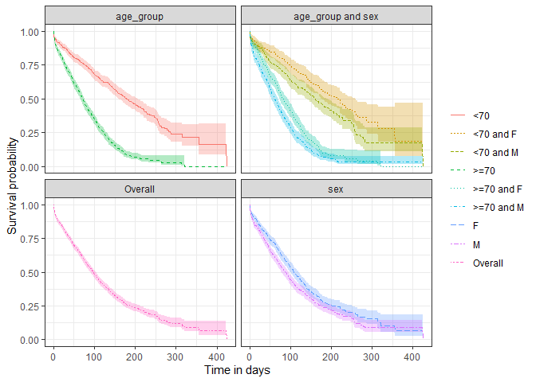

CohortSurvival contains functions for extracting and summarising survival data using the OMOP common data model.
Example usage
Create a reference to data in the OMOP CDM format
The CohortSurvival package is designed to work with data in the OMOP CDM format, so our first step is to create a reference to the data using the CDMConnector package.
For this example we´ll use a cdm reference containing the MGUS2 dataset from the survival package (which we transformed into a set of OMOP CDM style cohort tables). The mgus2 dataset contains survival data of 1341 sequential patients with monoclonal gammopathy of undetermined significance (MGUS). For more information see ?survival::mgus2
library(CDMConnector)
library(CohortSurvival)
library(dplyr)
library(ggplot2)
cdm <- CohortSurvival::mockMGUS2cdm()In our cdm reference we have three cohort tables of interest: 1) MGUS diagnosis cohort
cdm$mgus_diagnosis %>%
glimpse()
#> Rows: ??
#> Columns: 10
#> Database: DuckDB v0.10.3-dev163 [eburn@Windows 10 x64:R 4.2.1/:memory:]
#> $ cohort_definition_id <int> 1, 1, 1, 1, 1, 1, 1, 1, 1, 1, 1, 1, 1, 1, 1, 1, 1…
#> $ subject_id <dbl> 1, 2, 3, 4, 5, 6, 7, 8, 9, 10, 11, 12, 13, 14, 15…
#> $ cohort_start_date <date> 1981-01-01, 1968-01-01, 1980-01-01, 1977-01-01, …
#> $ cohort_end_date <date> 1981-01-01, 1968-01-01, 1980-01-01, 1977-01-01, …
#> $ age <dbl> 88, 78, 94, 68, 90, 90, 89, 87, 86, 79, 86, 89, 8…
#> $ sex <fct> F, F, M, M, F, M, F, F, F, F, M, F, M, F, M, F, F…
#> $ hgb <dbl> 13.1, 11.5, 10.5, 15.2, 10.7, 12.9, 10.5, 12.3, 1…
#> $ creat <dbl> 1.30, 1.20, 1.50, 1.20, 0.80, 1.00, 0.90, 1.20, 0…
#> $ mspike <dbl> 0.5, 2.0, 2.6, 1.2, 1.0, 0.5, 1.3, 1.6, 2.4, 2.3,…
#> $ age_group <chr> ">=70", ">=70", ">=70", "<70", ">=70", ">=70", ">…- MGUS progression cohort
cdm$progression %>%
glimpse()
#> Rows: ??
#> Columns: 4
#> Database: DuckDB v0.10.3-dev163 [eburn@Windows 10 x64:R 4.2.1/:memory:]
#> $ cohort_definition_id <int> 1, 1, 1, 1, 1, 1, 1, 1, 1, 1, 1, 1, 1, 1, 1, 1, 1…
#> $ subject_id <dbl> 56, 81, 83, 111, 124, 127, 147, 163, 165, 167, 18…
#> $ cohort_start_date <date> 1978-01-30, 1985-01-15, 1974-08-17, 1993-01-14, …
#> $ cohort_end_date <date> 1978-01-30, 1985-01-15, 1974-08-17, 1993-01-14, …- Death cohort
cdm$death_cohort %>%
glimpse()
#> Rows: ??
#> Columns: 4
#> Database: DuckDB v0.10.3-dev163 [eburn@Windows 10 x64:R 4.2.1/:memory:]
#> $ cohort_definition_id <int> 1, 1, 1, 1, 1, 1, 1, 1, 1, 1, 1, 1, 1, 1, 1, 1, 1…
#> $ subject_id <dbl> 1, 2, 3, 4, 5, 6, 7, 8, 10, 11, 12, 13, 14, 15, 1…
#> $ cohort_start_date <date> 1981-01-31, 1968-01-26, 1980-02-16, 1977-04-03, …
#> $ cohort_end_date <date> 1981-01-31, 1968-01-26, 1980-02-16, 1977-04-03, …MGUS diagnosis to death
We can get survival estimates for death following MGUS diagnosis like so:
MGUS_death <- estimateSingleEventSurvival(cdm,
targetCohortTable = "mgus_diagnosis",
outcomeCohortTable = "death_cohort"
)
MGUS_death |>
glimpse()
#> Rows: 1,318
#> Columns: 13
#> $ result_id <int> 1, 1, 1, 1, 1, 1, 1, 1, 1, 1, 1, 1, 1, 1, 1, 1, 1, 1,…
#> $ cdm_name <chr> "mock", "mock", "mock", "mock", "mock", "mock", "mock…
#> $ group_name <chr> "cohort", "cohort", "cohort", "cohort", "cohort", "co…
#> $ group_level <chr> "mgus_diagnosis", "mgus_diagnosis", "mgus_diagnosis",…
#> $ strata_name <chr> "overall", "overall", "overall", "overall", "overall"…
#> $ strata_level <chr> "overall", "overall", "overall", "overall", "overall"…
#> $ variable_name <chr> "survival_probability", "survival_probability", "surv…
#> $ variable_level <chr> "death_cohort", "death_cohort", "death_cohort", "deat…
#> $ estimate_name <chr> "estimate", "estimate_95CI_lower", "estimate_95CI_upp…
#> $ estimate_type <chr> "numeric", "numeric", "numeric", "numeric", "numeric"…
#> $ estimate_value <chr> "1", "1", "1", "0.9697", "0.9607", "0.9787", "0.9494"…
#> $ additional_name <chr> "time &&& outcome", "time &&& outcome", "time &&& out…
#> $ additional_level <chr> "0 &&& death_cohort", "0 &&& death_cohort", "0 &&& de…Now we have our results, we can quickly create a plot summarising survival over time.
plotSurvival(MGUS_death)
As well as estimating survival for our cohort as overall, we can also estimate survival by strata. These strata are based on variables that have been added to our target cohort.
MGUS_death <- estimateSingleEventSurvival(cdm,
targetCohortTable = "mgus_diagnosis",
outcomeCohortTable = "death_cohort",
strata = list(c("age_group"),
c("sex"),
c("age_group", "sex"))
)
plotSurvival(MGUS_death,
colour = "strata_level",
facet= "strata_name")
Estimating survival accounting for a competing risk
The package also allows to estimate survival of both an outcome and competing risk outcome. We can then stratify, see information on events, summarise the estimates and check the contributing participants in the same way we did for the single event survival analysis.
MGUS_death_prog <- estimateCompetingRiskSurvival(cdm,
targetCohortTable = "mgus_diagnosis",
outcomeCohortTable = "progression",
competingOutcomeCohortTable = "death_cohort"
)
plotSurvival(MGUS_death_prog, cumulativeFailure = TRUE,
colour = "variable_level")
As with single event survival, we can stratify our competing risk analysis.
MGUS_death_prog <- estimateCompetingRiskSurvival(cdm,
targetCohortTable = "mgus_diagnosis",
outcomeCohortTable = "progression",
competingOutcomeCohortTable = "death_cohort",
strata = list(c("age_group", "sex"))
)
plotSurvival(MGUS_death_prog %>%
dplyr::filter(strata_name != "overall"),
cumulativeFailure = TRUE,
facet = "strata_level",
colour = "variable_level")
Disconnect from the cdm database connection
cdm_disconnect(cdm)